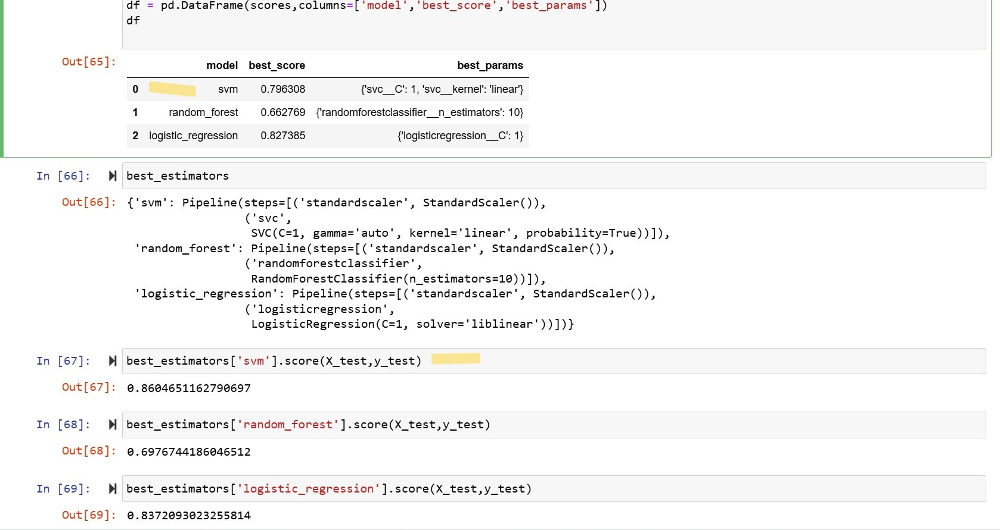

✔Problem Statement
The goal is to develop a machine learning model that can accurately classify images of five specific sports persons. This involves creating a robust image classification pipeline, optimizing model performance through hyperparameter tuning, and saving the trained model for integration with a Flask server to enable real-time predictions on the web platform.
Github Link
🔗 Link →
✔Process
- Step 1: Data Collection – Manually downloaded images of five sports celebrities and stored them in the images_dataset folder for further processing.
- Step 2: Data Cleaning – Retained only relevant images containing a clear face with two eyes. The cleaning process included converting colored images to grayscale, detecting faces with OpenCV's Haar Cascade technique, cropping detected faces, and manually removing irrelevant or incorrectly cropped images from the cropped folder.
- Step 3: Feature Engineering – Performed wavelet transformation on the images to extract important features. Combined the raw image with the wavelet-transformed image vertically using NumPy's stacking method to create the input dataset (X), and created the target dataset (Y) containing the names of the sports celebrities, preparing the datasets for model training.
- Step 4: Model Training – Selected Support Vector Machine (SVM) as the initial model for classification. Split the dataset into training and testing sets, scaled the input data, and trained the model, achieving an initial accuracy of 80%. The performance was further evaluated through a classification report.
- Step 5: Hyperparameter Tuning – Applied GridSearchCV to test different models with 5-fold cross-validation, determining the best model and validation score based on the validation data.
- Step 6: Results – Achieved an accuracy of 79% on the validation data from GridSearchCV and 86% on the test data, indicating the effectiveness of the trained model.
- Step 7: Outcome – Selected Support Vector Machine (SVM) as the best model for the task. Plotted the confusion matrix using Seaborn's heatmap to visualize the model's performance, with the X-axis representing predicted values and the Y-axis representing true values.
- Step 8: Model Saving – Saved the trained SVM model as a .pkl file using joblib for easy deployment and integration into a Flask server for future use on the website.
✔Skills Showcased
Data Cleaning
Data Preprocessing
Exploratory Data Analysis
Data Modeling
Python
✔ Technologies Used
Numpy
Open CV
Matplotlib
Seaborn
Sklearn
GridSearchCV
Best Model

✔Conclusion
The SVM model performed effectively with an accuracy of 86% on test data. This trained model is ready for integration into a Flask server and subsequent deployment on the website.